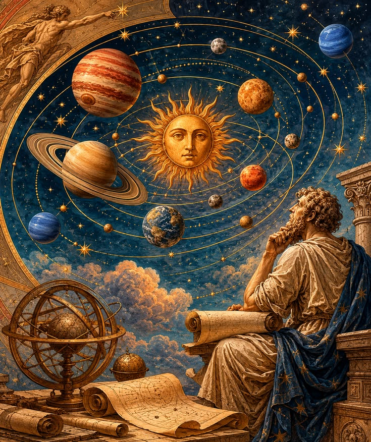
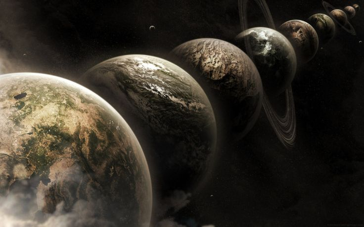

Curiosidades
- Un día en Venus dura más que un año en Venus.
- En el espacio nadie puede oír un grito, porque no hay aire.
- El universo tiene unos 13,800 millones de años.
- Si pudieras caer en un agujero negro, el tiempo se estiraría.

Preguntas frecuentes
¿Qué hay dentro de un agujero negro?
Nadie lo sabe con certeza. La física que conocemos deja de funcionar en su interior, así que sigue siendo uno de los grandes misterios.
¿El universo tiene un final?
No lo sabemos. Puede seguir expandiéndose para siempre o algún día detenerse, pero todavía no hay una respuesta segura.
Glosario
- Agujero negro
- Región del espacio con gravedad tan fuerte que nada puede escapar de ella.
- Materia oscura
- Materia invisible que no emite luz, pero que afecta la gravedad de las galaxias.
- Energía oscura
- Fuerza misteriosa que hace que el universo se expanda cada vez más rápido.
- Horizonte de sucesos
- El límite de un agujero negro; lo que lo cruza ya no puede regresar.